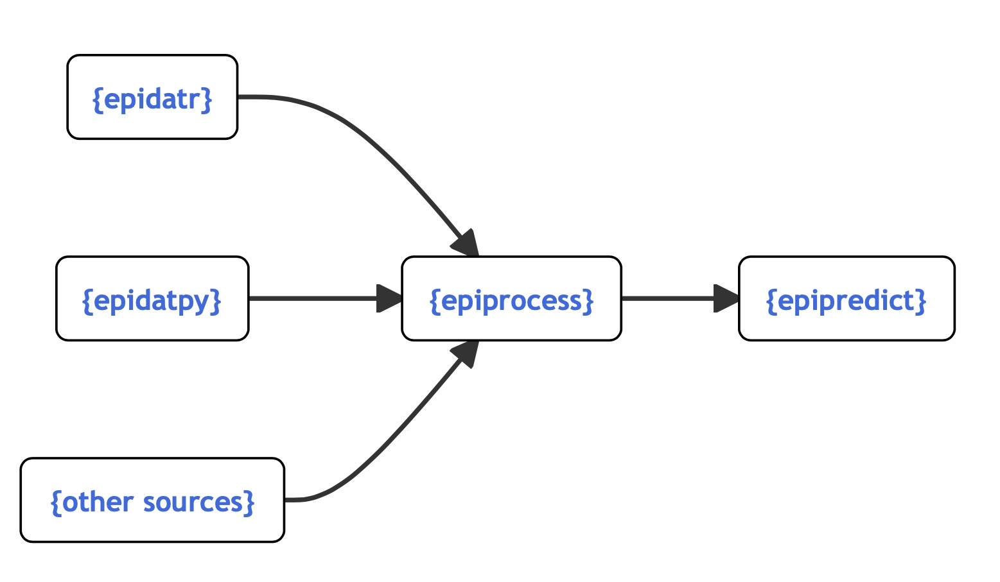
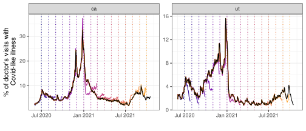

Data Cleaning, Versioning, Nowcasting With {epiprocess}
MICOM Tooling Workshop 2025
David Weber, Nat DeFries
Adapted from slides by Alice Cima, Rachel Lobay, Daniel McDonald, Ryan Tibshirani, with huge thanks to Logan Brooks, Xueda Shen, and Dmitry Shemetov
12 August 2025
The epiverse ecosystem
Interworking, community-driven, packages for epi tracking & forecasting.
1 (Versioned) Panel Data Processing Functions
Features - Correlations at different lags
The below plot addresses the question: “For each state, are case and death rates linearly associated across all days?”
To explore lagged correlations and how case rates associate with future death rates, we can use the
dt1parameter inepi_cor()to shift case rates by a specified number of days.

- We can see that, in general, lagging the case rates back by 14 days improves the correlations.
Features - Systematic lag analysis

The strongest correlation occurs at a lag of about 23 days, indicating that case rates are best correlated with death rates 23 days from now.
Features - Compute growth rates
- We can compute time-varying growth rates for two states:

- Try on your favorite dataset so far, and plot using:
- Also see rtestim for estimating RT values instead of the growth rate. https://dajmcdon.github.io/rtestim/ Similar usage
Features - Outlier detection
The
detect_outlr()function offers multiple outlier detection methods on a signal.The simplest is
detect_outlr_rm(), which works by calculating an outlier threshold using the rolling median and the rolling Interquartile Range (IQR) for each time point:
Threshold = Rolling Median ± (Detection Multiplier × Rolling IQR)
- Note that the default number of time steps to use in the rolling window by default is 21 and is centrally aligned.
- The detection multiplier default is 2 and controls how far away a data point must be from the median to be considered an outlier.
Features - Outlier detection

- Same idea as the previous slide; you can plot using
autoplot
Features – sliding a computation on an epi_df
The simplest way to use
epi_slideis tidy evaluation.For a grouped
epi_df,epi_slide()applies the computation to groups separately.
# A tibble: 6 × 4
geo_value time_value raw_cases cases_7dav
<chr> <date> <dbl> <dbl>
1 ca 2022-03-01 4310 4310
2 ca 2022-03-02 7044 5677
3 nc 2022-03-01 1231 1231
4 nc 2022-03-02 2243 1737
5 ny 2022-03-01 1487 1487
6 ny 2022-03-02 1889 1688epi_archive: Collection of epi_dfs
- full version history of a data set
- acts like a bunch of
epi_dfs — but stored compactly - allows similar functionality as
epi_dfbut using only data that would have been available at the time
Revisions
Epidemiology data gets revised frequently.
- We may want to use the data as it looked in the past.
- or we may want to examine the history of revisions.
epi_archive: Collection of epi_dfs
Subset of daily COVID-19 doctor visits (Optum) and cases (JHU CSSE) from all U.S. states in archive format:
→ An `epi_archive` object, with metadata:
ℹ Min/max time values: 2020-06-01 / 2021-11-30
ℹ First/last version with update: 2020-06-02 / 2021-12-01
ℹ Versions end: 2021-12-01
ℹ A preview of the table (1514489 rows x 5 columns):
Key: <geo_value, time_value, version>
geo_value time_value version percent_cli case_rate_7d_av
<char> <Date> <Date> <num> <num>
1: ak 2020-06-01 2020-06-02 NA 1.145652
2: ak 2020-06-01 2020-06-06 0.136815 1.145652
3: ak 2020-06-01 2020-06-08 0.136249 1.145652
4: ak 2020-06-01 2020-06-09 0.106744 1.145652
5: ak 2020-06-01 2020-06-10 0.106676 1.145652
---
1514485: wy 2021-11-26 2021-11-29 3.739819 23.207343
1514486: wy 2021-11-27 2021-11-28 NA 23.207343
1514487: wy 2021-11-28 2021-11-29 NA 23.207343
1514488: wy 2021-11-29 2021-11-30 NA 25.071781
1514489: wy 2021-11-30 2021-12-01 NA 25.464294Features – sliding computation over epi_archives
- We can apply a computation over different snapshots in an
epi_archive.
This functionality is very helpful in version aware forecasting. We will return with a concrete example.
Features – summarize revision behavior
revision_analysis()is a helper function that summarizes revision behavior of anepix_archive.
revision_data <- revision_analysis(
archive_cases_dv_subset,
case_rate_7d_av,
drop_nas = TRUE,
min_waiting_period = as.difftime(60, units = "days"),
within_latest = 0.2,
compactify_abs_tol = .Machine$double.eps^0.5,
)
head(revision_data$revision_behavior)# A tibble: 6 × 11
time_value geo_value n_revisions min_lag max_lag lag_near_latest spread
<date> <chr> <dbl> <drtn> <drtn> <drtn> <dbl>
1 2020-06-01 ca 12 1 days 546 days 1 days 0.248
2 2020-06-02 ca 12 1 days 545 days 1 days 0.416
3 2020-06-03 ca 11 1 days 544 days 1 days 0.115
4 2020-06-04 ca 11 1 days 543 days 1 days 0.342
5 2020-06-05 ca 7 1 days 520 days 1 days 0.0982
6 2020-06-06 ca 8 1 days 519 days 1 days 0.188
# ℹ 4 more variables: rel_spread <dbl>, min_value <dbl>, max_value <dbl>,
# median_value <dbl>Features – summarize revision behavior
── An epi_archive spanning 2020-06-01 to 2021-11-30. ──── Min lag (time to first version): min median mean max
1 days 1 days 1 days 2 days── Fraction of epi_key + time_values with No revisions:
• 523 out of 1,956 (26.74%)
Quick revisions (last revision within 3 days of the `time_value`):
• 531 out of 1,956 (27.15%)
Few revisions (At most 3 revisions for that `time_value`):
• 1,199 out of 1,956 (61.3%)
── Fraction of revised epi_key + time_values which have:
Less than 0.1 spread in relative value:
• 1,312 out of 1,433 (91.56%)
Spread of more than 6.351 in actual value (when revised):
• 39 out of 1,433 (2.72%)
── Days until within 20% of the latest value: min median mean max
1 days 1 days 1.7 days 84 daysTry on your favorite archive so far
Visualize revision patterns: Autoplots roll out!
2 Basic Nowcasting in the Epiverse
Case study: NCHS mortality
- In this example, we’ll demonstrate the concept of nowcasting using NHCS mortality data. (the number of weekly new deaths with confirmed or presumed COVID-19, per 100,000 population).
- We will work with provisional data (real-time reports) and compare them to finalized data (final reports).
- The goal is to estimate or nowcast the mortality rate for weeks when only provisional data is available.
Fetch versioned data
Let’s fetch versioned mortality data from the API (pub_covidcast) for CA (geo_values = "ca") and the signal of interest (deaths_covid_incidence_num) over early 2024.
# Fetch the versioned NCHS mortality data (weekly)
nchs_archive <- pub_covidcast(
source = "nchs-mortality",
signals = "deaths_covid_incidence_num",
geo_type = "state",
time_type = "week",
geo_values = c("ca", "ia"),
time_values = epirange(202001, 202440),
issues = "*"
) |>
select(geo_value, time_value, version = issue, mortality = value) |>
as_epi_archive(compactify = TRUE)You’ll need an API key to actually run this, unfortunately
Versioning analysis – latency
- Question: What is the latency of NCHS data?
# A tibble: 10 × 3
geo_value time_value min_lag
<chr> <date> <drtn>
1 ca 2024-04-07 1 weeks
2 ut 2021-09-12 1 weeks
3 ca 2022-03-27 2 weeks
4 ca 2021-02-28 1 weeks
5 ca 2020-08-02 18 weeks
6 ut 2021-11-07 1 weeks
7 ut 2022-04-24 1 weeks
8 ut 2022-06-19 2 weeks
9 ut 2023-02-19 1 weeks
10 ca 2022-05-15 2 weeks- We randomly sampled some dates to check if there is a consistent latency pattern.
- Understanding latency prevents us from using data that we shouldn’t have access to.
Versioning analysis – backfill
- Question: How long does it take for the reported value to be close to the finalized value?
revision_data$revision_behavior |> select(geo_value, time_value, lag_near_latest) |> slice_sample(n = 10)# A tibble: 10 × 3
geo_value time_value lag_near_latest
<chr> <date> <drtn>
1 ut 2020-05-31 27 weeks
2 ca 2021-04-04 5 weeks
3 ut 2022-08-07 2 weeks
4 ca 2022-08-21 3 weeks
5 ca 2023-07-23 3 weeks
6 ut 2020-03-29 36 weeks
7 ca 2020-11-01 5 weeks
8 ca 2024-03-31 4 weeks
9 ca 2024-07-14 3 weeks
10 ca 2024-08-18 3 weeks - It generally takes at least 4 weeks for reported value to be within 20% (default in
revision_analysis()) of the finalized value. - We can change the threshold of percentage difference by specifying the
within_latestargument ofrevision_analysis().
Revision pattern visualization
This shows the finalized rates in comparison to multiple revisions to see how the data changes over time:

Comparison: quantile regression

Nowcasting — cmu-delphi/micom-tooling-workshop-2025